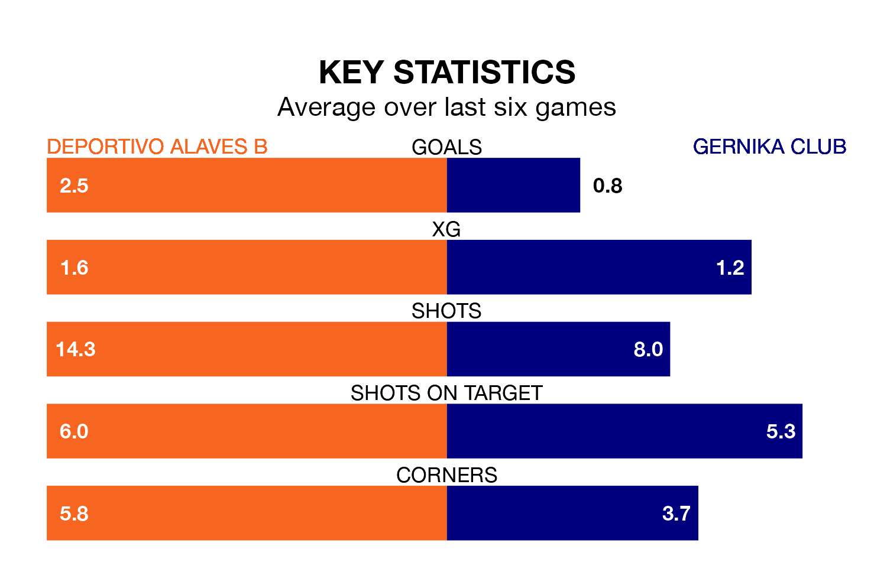

Deportivo Alaves B host Gernika Club at Ciudad Deportiva José Luis Compañón on early Sunday on the back of three consecutive wins in Segunda División RFEF Group 2.
Deportivo Alaves B have picked up 15 points from their last six games, and they face a Gernika Club side who drew their last match, and have collected five points from the last possible 18.
With 35 goals in 18 games so far this season, Deportivo Alaves B are the league's third-highest scorers with 1.9 goals per game. And they are conceding fewer than average, letting in 18 goals at a rate of 1.0 per game.
Gernika Club, meanwhile, are average scorers, with 1.1 goals per game. They have conceded 1.6 goals per game.
The hosts are third in the table after 18 games, of which they have won 12 and drawn one, earning 37 points.
The away team are eight places behind Deportivo Alaves B in 11th, with four wins and nine draws putting them on 21 points.
In the last three years, Deportivo Alaves B and Gernika Club have played each other on three occasions. Gernika Club won two of them and they drew once.
Their last meeting was on September 17, when Gernika Club won 3-1 at home.
Deportivo Alaves B's last match was on January 14, a 5-1 win against Náxara CD.
Gernika Club drew 2-2 with CD Izarra last time out, also on January 14.
Updated: 06:13 (UTC), 18/01/24